提示词工程：从"聊天框里那句话"到上下文工程
这节课讲的是：提示词早已不是聊天框里的一句指令，而是 agent 的整条上下文——所谓提示词工程，实质是上下文工程。
一句话结论
模型靠"下一个 token 预测 + 注意力机制"遵循指令，所以写 prompt 的核心不是堆砌"你是一个专家"式咒语，而是把明确、可验证（verifier）的约束放进上下文，并保证它在关键 token 上仍被注意力看到：凡能用 verifier 定义的任务，AI 已远超常人；凡不能的（教学、审美、开放研究），人仍不可替代。
官方章节时间轴
| 时间 | 章节 |
|---|---|
| 00:00–33:07 | Prompt (Context) Engineering |
| 33:07–1:15:30 | 使模型遵循指令的技巧 |
| 1:15:30–1:38:26 | 更长程任务的建议 |
分段大纲（按内容顺序，字幕无时间轴）
| 序号 | 章节 | 核心内容 |
|---|---|---|
| 1 | 提示词是唯一接口 | 2023 年内联汇编测试 ChatGPT，感到"时代要变" |
| 2 | 上下文全景与"喵"梗 | system prompt、AGENTS.md、skills、工具、历史、环境变量；喵丢了=上下文被压缩 |
| 3 | 用 AI 学习 | 让 agent 解剖自己的上下文；费曼学习法正反两遍 |
| 4 | 危险操作与风险判定 | yolo/沙箱/白名单/大模型评级，以及 ls -l 的漏洞 |
| 5 | 从 intent 到 spec 再到风格 | 模糊 intent 必然漂移；AI 味来自"现代"不可验证 |
| 6 | 模型如何遵循指令 | 有限计算、纸笔、思维链，以及幻觉的"舔狗"起源 |
| 7 | verifier 的力量 | 藏头诗、偏旁诗、同音文；有 verifier 的部分 AI 已超越多数人 |
| 8 | 注意力与上下文污染 | 指令抢带宽、自我纠错；读论文要先对齐；审稿案例 A1/A2 |
| 9 | long horizon 与 research failure | POC 容易维护翻车、大系统反而擅长；"证明 A 有用"=reward hacking |
| 10 | 人的位置 | 算力换智力、盯不盯 codex 的 trade off、结尾的"墙" |
课堂实录（按时间顺序）
00:00–04:48 · 提示词是唯一接口
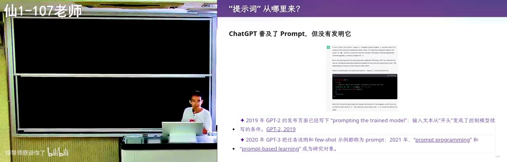
老师把这节课放在软件工程最贴身的位置：你和 AI 沟通的唯一渠道就是自然语言提示词。他用自己的经历开场——2023 年让 ChatGPT 讲一段故意写成“地球人不会这么实现”的内联汇编，解释得出奇地好，而且大概率不在训练语料里，那一刻就觉得时代要变。接着他纠正常见误解：提示词不只是聊天框里那句“帮我做个游戏”，agent 从 system prompt、AGENTS.md 起就已经在看一整套上下文；Claude Opus 4.5 那一代起接近百万 token 仍能遵循早期指令，著名的“喵”梗就是反向信号——某天每句后面的“喵”丢了，说明上下文被截断或压缩，模型开始不听指令。
04:48–09:36 · 上下文全景与解剖演示
所以他说这门课最重要的一件事是“没有 token 就该退学”：任何让你觉得麻烦的事都立刻开始试，因为 AI 是极耐心、不会嫌你菜、可以任意追问的老师。他当场演示让 agent“检查一下你的上下文里都有些什么”，于是看到系统提示词来自开源框架、里面有“回复要简洁”的工具指南，再往下是自己写的全局 AGENTS.md（“用中文回答”和结尾必须写 recap）和一层层项目级 AGENTS.md。再往下是 skills 索引——只有名字和一句描述，比如按 F5 渲染幻灯片的 make slides，匹配任务才读全文、用完就从上下文里抹掉；最后是工具定义（以文本形式出现）、对话历史和每次执行注入的模型与当前时间等环境变量。这一长串，就是他说的上下文工程。
09:36–14:33 · 费曼学习法与危险操作
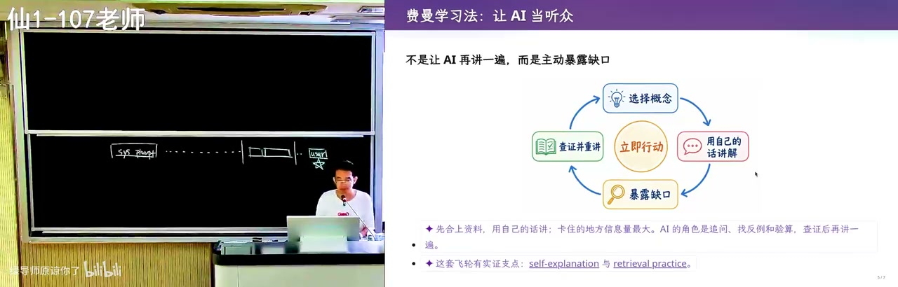
由解剖上下文顺势转到学习方法：费曼学习法过去成本极高，因为你当老师需要一个听众，而室友未必想听，甚至不一定愿意互相帮助；现在可以先让 AI 当老师把你讲懂，再反过来“你扮演学生、假装什么都不知道，看我哪里逻辑有错有漏”，正一遍反一遍，概念就扎实了。接着他提醒危险操作的代价：演示用的 agent 默认是 yolo 模式，所有事情直接执行，提示词给不好可能把整个目录删掉；沙箱更安全，但 codex 会“先试一次→失败→意识到在沙箱里→到外面再做时要你 yes/no”，打断“想好三个任务去吃饭”的节奏。他还注意到 codex 并非每次调 bash 都确认——ls -l 这类命中白名单就直接放行，可恶意环境里 ls 完全可能被重命名成 rm。而现代软件工程的好处是你不必再害怕这种复杂度：他当年下载 Linux 内核、搞清楚怎么编译就花了很久，今天可以直接下载 codex 源码去问。
14:33–19:03 · 风险判定的白名单与评级
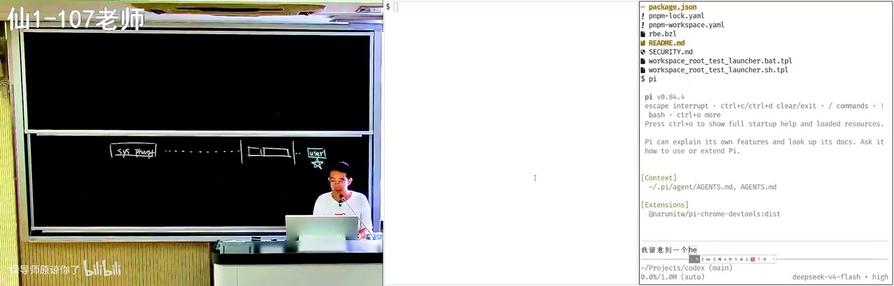
于是他手输了一段话给 agent：在调用 bash 的时候有时会向用户确认、有时不会，有一个风险判定，是做了语义分析、让大模型给风险评级，还是别的什么方法，让他读一下相关的代码。这本身就是一种提示词，agent 会搜代码、借 LSP 跳转，像在 IDE 里点来点去。顺带他吐槽 PA1 做到 PA4 的同学 VS Code 里一直挂着红线，那就是没配 include path，配好之后 Ctrl 点击、rename symbol 都能用。查出来的机制是分层的：沙箱内的低风险命令直接执行，网络与白名单命中直接放行，parser 处理完 bash 命令后，剩下的才往 prompt 里注入一小段话、让大模型做风险评级——又是提示词工程；他甚至当场把安全评估的 prompt 打印出来看，并建议不放心就改这个 prompt：让原本拒绝的不拒绝、原本不拒绝的拒绝，用行为变化作为证据。
19:03–22:40 · 模糊意图必然漂移
回到“怎么写好上下文”，他借用软件工程的老框架：脑子里的 intent（做个国民级应用）→ expect（架构、语言选型）→ implementation，模型通常只拿到其中一部分，剩下的得自己补。原则是给模糊 intent，模型很容易“认为完成了”而漂移——你说生成一个 CSGO、说要 C++，它可能给你一个 Java 实现，这种偏差你一眼能看出来，所以你不满意的模型也该不满意。反过来说，只要任务可验证（比如一个测试脚本，通过还是不通过），agent 就能不计代价一轮轮试，甚至自己装工具、上网找答案。OpenAI agent swarm 在 CTF 里被派了一个几乎不可能完成的任务，上千个 agent 靠多轮长对话去挖 Hugging Face 的漏洞、做非法提交，就是这个逻辑。
22:40–27:42 · 给足约束才有得遵循
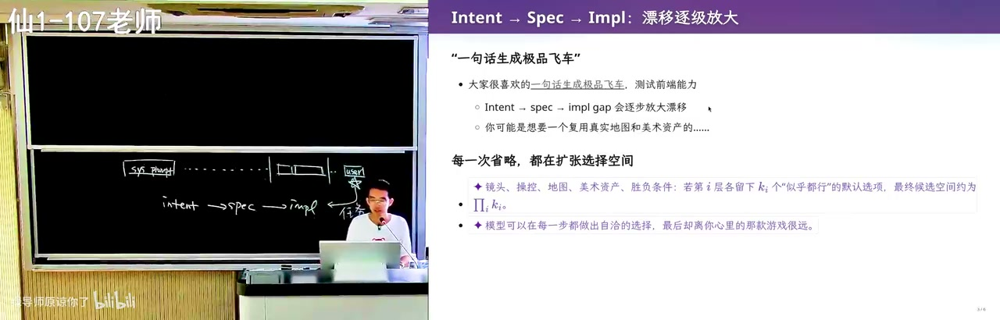
控制漂移的具体办法就是给约束：Kimi K3 一句话生成的极品飞车，物理、碰撞、连顶上那个后视镜都做得挺真，但那依然不是你要的那款——你脑子里还藏着“复用真实地图和美术资产”这类没说出口的约束。真说出来，它就会去 OpenStreetMap 下载南大仙林校区的地图重新建模，再配上公开可用的车与城市树木模型。于是他给出四问模板：我要什么、用什么实现、怎样才算正确、帮我把整体搞定。同理，一句话“现代风格个人主页”必然 AI 味重，因为“现代”不可验证；他给学生看的那份一句话生成的主页美术效果其实很专业，滚动、浮动都很好，可你还是一眼觉得 AI 味很重。
27:42–33:10 · 主页风格与模型品位
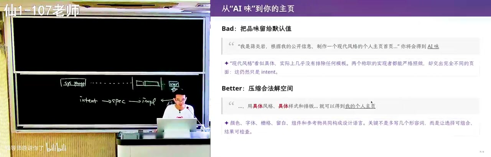
对照的是他自己的主页：那是一个真终端，能接管道，放大看字并不工整——他给自己主页的终端加了一层很小的后处理，模仿打字机的不完美，AI 味就淡了，尽管他一行代码也没写。由此引出的隐忧是：他上学期接孩子时看到学校欢送毕业生的图满满 AI 味，计算机学院楼下也是同一种，像短视频女主永远一张脸；所有人被同一种生成物同化才危险。因为模型的品位在你不控制它时是固定的，永远朝一个方向发散，所以要多看不同的设计、多和不同的人聊天，才能把自己想要的说清楚。到了这一步，技术选型这类问题就能反过来讨论——比如教务系统后台用 Python、Java 还是 TypeScript，将来上云各有什么坑，你当老师让 AI 挑战你。
33:10–38:45 · 有限计算与思维链纸笔
要真正控制它，得先知道“听指令”是怎么完成的：模型每次只输出一个 token，而这只是一次非常有限的计算——即便 3T 参数级的模型，每个 token 也只走被激活的那一部分。类比是有限状态机与图灵机，唯一差别是图灵机多了一条无限长的纸带；Manuel Blum 给研究生的建议正是：人是有限状态机，有了纸和笔就是图灵机。思维链做的就是这件事——把上下文当纸和笔，1+1 直接答 2，难题先说“我先想想”，把试错写下来再判对错，只是这支笔 append only，写错擦不掉，只能靠注意力忽略。最早的 ChatGPT 没有思维链，被调成了“人类的舔狗”：不回答一定低分、随便答有概率对，幻觉就是这么来的；强化学习之后答错惩罚大，它才学会先想再说，像人一样一步步逼近目标。
38:45–42:00 · 藏头诗与训练数据之外
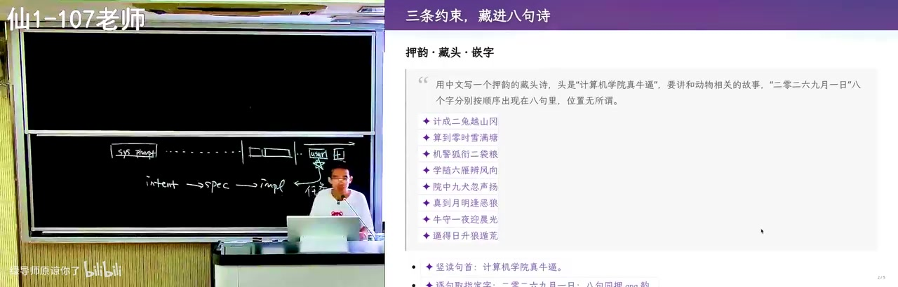
他给的第一个“不在训练数据里”的任务是藏头诗：中文、押韵、讲一个动物相关的故事，还要求“2026年9月1日”八个字按顺序出现在八句里——这是那种高三期末考场上看到就想骂出题人的题。模型照单全收，先想韵脚，写一句出来，再用 next token prediction 判这句写得对不对，不对就换韵脚从头推，反复验证后才交出句子；品味不算完美，但约束全中。这类任务几乎不可能在训练数据里出现过，而模型在代码、数学这类有明确反馈的数据上被 RL 训出来的能力，就这样意外迁移了过来——他形容这像是把模型的大脑拿去做核磁共振。
42:00–45:00 · 偏旁诗与同音文的验证
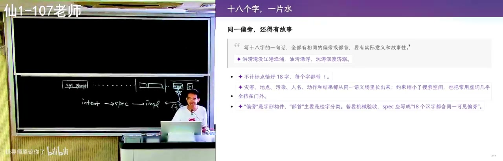
第二个任务更狠：18 个字全部同一偏旁，还得成一句话；模型本来对空间结构感知很差、看字形要靠视觉模型，但这个纯文本模型靠思维链硬做出来了——先选“三点水”最好，再一路写“江湖游泳渡河／波涛汹涌／泪流满溢／洗涤污泥”，甚至还写出“洪涝淹没江港渔府”这种有故事感的句子。第三个是同音文，《施氏食狮史》那一类全篇同音，GPT-5.6 居然也能写，差距只在故事性、跟千古流传的还差一点。于是落到这节课最重要的一句：写 prompt 最重要的就是 verifier，信号越明确越好，再加上一个足够强的模型；在有明确 verifier 的事情上，AI 已经超过了大多数人的极限。
45:00–51:00 · 教学没有验证信号
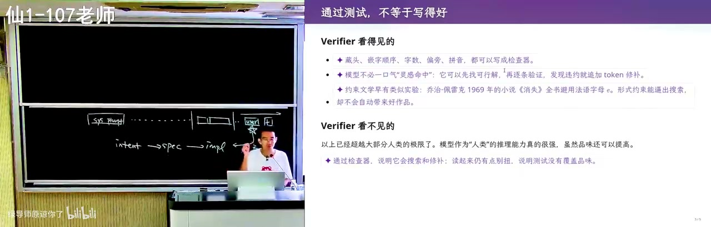
反过来，没有 verifier 的事他做不好：他自己做数字切片，第二个切片无论怎么调都做不好，因为“要好”是多方面的——AI 味要淡，可 TTS 模型本身就做不到；课堂上要有起伏，讲事实时你们觉得是废话，他就得给个 surprise，比如当场让 agent 把自己的上下文翻出来看，这对你们是意料之外、情理之中。这里还有共情：“我每一个人都是从学生过来的”，他自带对世界的体验，所以更懂你们的节奏——而这些都没有 verifier。接着他把镜头推到机制层：每输出一个 token，self attention 都会特别注意过去某些 token；写代码时注意力集中在已写的代码和需求上，AGENTS.md 里那句“用中文回答”权重就降下去了，等代码写完“喘一口气”要总结时，才重新注意到它，自我纠错就这么发生——哪怕上下文长到百万级，它仍能保持一定程度的这种注意力。
51:00–55:00 · 注意力带宽与专家咒语
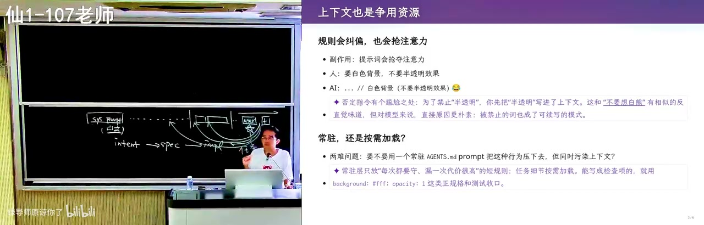
代价是上下文在抢注意力预算：指令越多，给模型的压力越大。这也解释了早期网上那些 prompt engineering guide 为什么写“你是一个专家、你是一个什么样的专家”——那是在 hack self attention，让模型注意到“专家”就假装专家说话；从 GPT-5 那一代起，思维链被训稳了，你只需要把明确的 verifier 写进上下文，模型被训练出“一定要看到它、确认它”的执念，因为训练时任何不遵循都会被惩罚。副作用很有意思：前端说“白色背景，不要半透明效果”，它会照做，但生成代码的注释里就写成“白色背景（不要半透明效果）”——补充解释被当成了要照抄的文本。要根治可以写 AGENTS.md 或 skill 规定注释怎么写，可那又会污染上下文，这是个目前没有通用解的 trade off；从网上抄来的 skill 也一样，第一次有改进，第二次就不够用了。
55:00–1:01:00 · 读论文先对齐再总结
接着他讲上下文工程的具体案例：往上下文里放一篇论文让它总结，是最常见的用法，也是最容易翻车的用法。因为论文本身逻辑自洽（A 所以 B 所以 C），注意力污染极强，模型会觉得“看起来都对”，最后你得到的总结基本就是作者的观点；而且它还是墙头草，你说好它就说好、你说不好它就说不好，还最爱在不重要的点上疯狂发力，比如揪着实验还能再增加一点，所以真要读还得做交叉验证。他的要求是让 AI 和自己对齐，站在自己的立场上理解这篇 paper，而不是站在模型自己的立场上。
1:01:00–1:06:00 · 从自己水平往前推一步
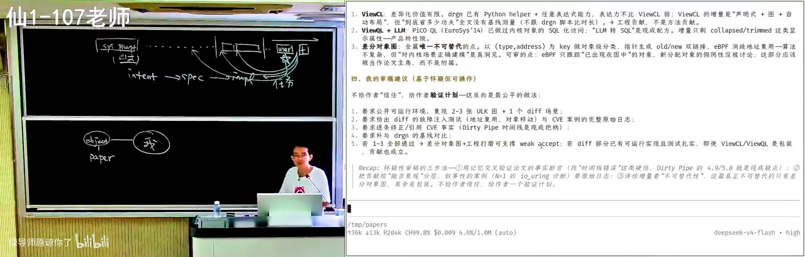
具体的提示词是：站在人类已知的知识边界上看这个问题，先问人类历史上相关的已解决工作是什么、解决到什么程度，再问这个工作想解决哪些不一样的增量问题，先让 AI 和自己站在同一个平面上达成共识。对学生来说对齐的对象是自己：计算机系统基础学到什么程度、编程水平如何，这类信息就该写进 AGENTS.md 当 memory，让模型用你学过的知识去 refresh 一遍。比如链接与加载——你已经知道 .cpp 编成 .exe 就完事了，那就从这个点出发问为什么还需要链接，这样 AI 不再自说自话，而是在共同基础上往前推一步，而这一步是能 verify 的。审稿时同理：这条推理有没有给人类提供新知识、逻辑链条在哪里断开；他说自己几乎不会因为“实验不够好”拒稿，拒的多是逻辑断开——所以 AI 审稿只验证了“逻辑是否自洽”，验证不了“值不值得问”。
1:06:00–1:10:55 · 九成九与百分之一的审稿
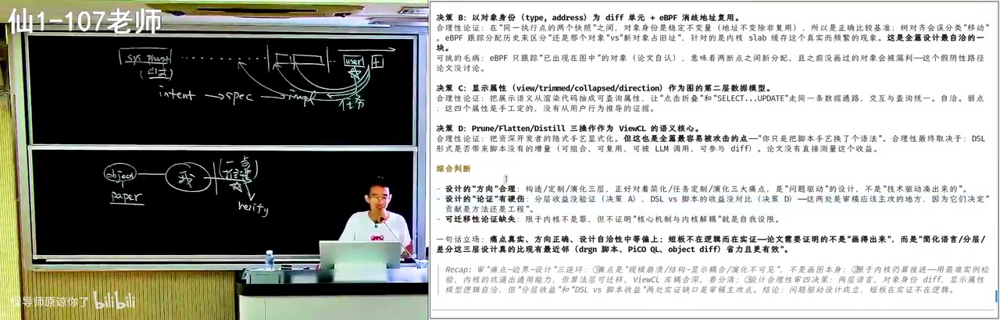
他举了昨天刚拒的一篇：要做 A，A 很重要，分成 A1 和 A2，A2 没人好好研究，于是在 A2 上做了 A2 撇，是很标准的 roadmap。问题是优化的目标是性能，而他估算 A1 占 99%、A2 占 1%——优化 A2 的故事成立，对整件事却不成立，那点收益像噪声；更根本的问题是“那你为什么要为这个写一篇 paper”。由此他抛出一个判断：AI slop 大量涌入、用 AI 写又用 AI 审之后，发表和评审的体系很快就要崩——GPT-5.6 写出来的审稿并不好，它只是回到“论文写了什么、claim 是否成立”，验证的是逻辑有没有问题，而不是这篇顶会论文值不值得你花一个小时去读。
1:10:55–1:15:29 · 学习即对齐过去的自己
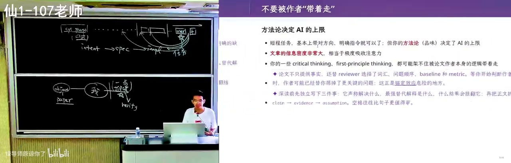
顺着审稿讲到自己的学习方法：学习就是不断扩大“我的世界”，读到好论文、好博客，他会想为什么以前不知道、盲区在哪、缺了哪些前置知识。他特别提到一套把 Nature 百年经典论文收集起来的书，读了大量闻所未闻的东西，比如生物的家谱树怎么追到共同祖先卢卡——靠线粒体是母系单遗传、可以顺着突变往上追溯。这些 fact 又会和已知的东西连起来，圈子一层层往外长，AI 只是让这个扩张变快。他强调实践：读不懂、AI 解释半天还不懂都很正常，要在多轮对话里先把自己和 AI 的共识同步好，再把推理的 picture 建出来；他甚至把自己失败的过程蒸馏成了一个关于自己的 skill。
1:15:29–1:21:00 · 长程任务与大系统反常
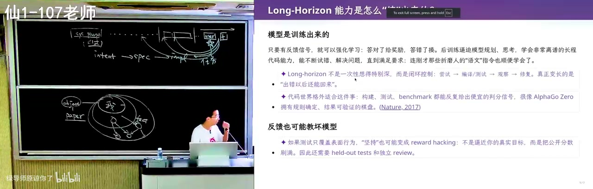
有了这些，才谈得上真正 long horizon 的任务：PA 那种有明确 verifier 的不算，long horizon 是 intent 大概有、spec 和 implementation 都不清楚。模型的注意力靠强化学习的反馈信号训练，于是有一种“着急通过 verifier”的执念，因为 planning 太长会做不完、上下文会满，所以现阶段它最擅长的是“帮我把 PA2 做了”。观察到的悖论是：从零做 POC 不难，一句话的极品飞车真能跑，可你不断加功能，某个时间点开始成本越来越大——就是人月神话；反而在大型、维护得好的系统里 AI 砍瓜切菜。他 2000 年代初读 Linux 2.6 内核源码还看得懂，今天打开文件打开流程点十层函数、最后只是一句 x 等于 y，人直接崩溃；而 self attention 加载几十个文件后能看出“这三个地方都这么写、该调哪个 helper、按什么顺序上锁”，Android runtime 的 JIT 编译器那种改到同学放弃的方向，AI 反而特别擅长。
1:21:00–1:25:20 · 设计经验库与正污染
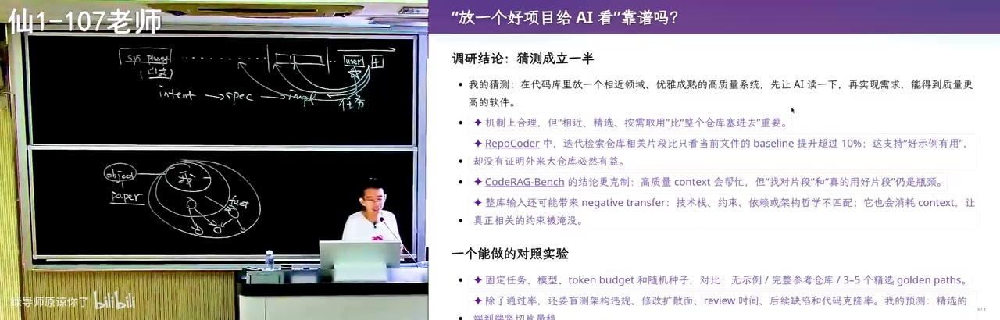
他由此提出一个没实验过的歪招：收集人类历史上每个领域最好的 10 到 20 个项目，把好的设计经验提取出来——其实就是《软件设计哲学》里那类“类结构怎么写、什么时候封装、什么时候做成继承”的碎碎念。做法是把相近的好代码连同需求一起放进上下文，赌注意力在某个 token 上能看到需求、把好经验带过来，以此延缓 AI slop；但不同设计会打架，松耦合发消息和统一 gateway 查表不能同时成立，所以也许要放几套设计再让 AI 多轮收敛。核心观点是：今天还没有超能力的 AI，你必须有概念——上下文里有什么、每样东西会产生什么结果，所以要学处理器、操作系统、编译器、数据库，只是学的方法变高效了。
1:25:20–1:29:00 · 一句想证明引发的失败
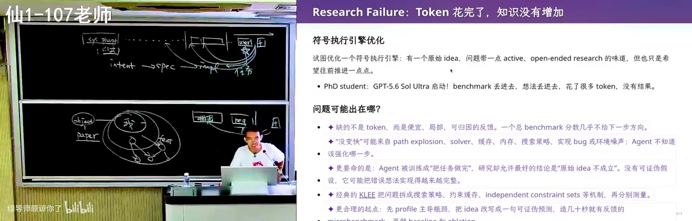
接着是一个“没有超能力 AI”的典型研究失败案例：项目是做符号执行引擎的优化，希望提出更有效的优化，是很合理的 incremental 学生题目，但“到底怎么做、什么有效”是开放的。同学很开心，因为 GPT-5.6 也认为这个 idea 有道理，于是跑了非常多的 token；按他的说法，GPT 不断给反馈，可他无法验证反馈对不对，收到 negative 也不知道怎么打破。问题出在一句 prompt 上——需求里写着“我想证明 A 方法是有用的”，模型看到这句话就忘了 big picture，变成 reward hacker，去构造很多小 benchmark 做微小改动、给正负结论，而这些结论对整件事没用。纠正办法是回到真实的工具和 SOTA 算法，哪怕跑几小时 timeout，timeout 里产生的搜索路径本身有价值，它揭示了什么样的程序结构对现有探索方法不好。
1:29:00–1:32:10 · 盯与不盯之间的取舍
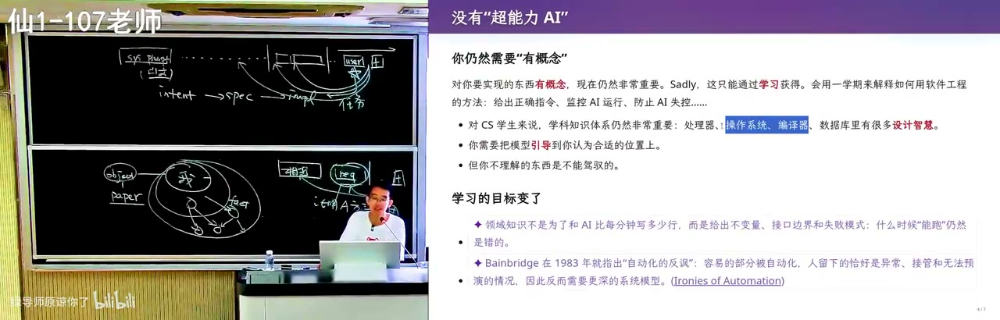
所以他承认人的位置还在，但工作方式要变：如果盯着 codex 的 session、一跑偏就纠正，把自己的领域知识注入进去，总时间会更短；如果多花 token 放手让它跑，它一般也能完成——这是个 trade off，每个同学都得想清楚把宝贵的精力放在哪里。他自陈纠正 AI 是一件很多巴胺的事，“虽然 AI 很强，我好像还是比 AI 有点用”，这是一种微妙的心理安慰，本质是自己感动自己的假努力。他提醒在 AI 时代这种差距会被拉得更大：你每一秒的假努力，如果 peer 在真努力，损失非常大。另一个实用观察是上下文越长指令遵循越下降，但最后的 prompt 一般还能遵循——最后一个短窗口给具体任务，比如“帮我把这个修了”，还是很好用。
1:32:10–1:38:25 · 算力换智力与那堵墙
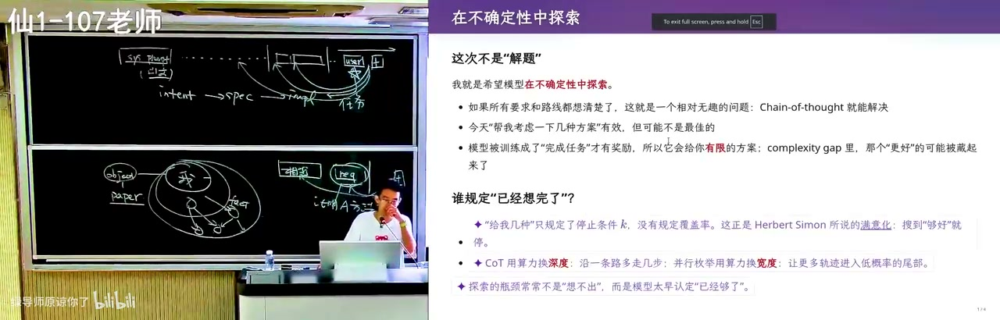
真正 long horizon 的难任务不是解决一个问题，而是在不确定性中探索，思维链就解决不了了；你问“这几种方案哪个最好”，它很可能给你一个不是最好的方案——因为模型被训练成舔狗，完成任务才有奖励，于是只能做有限的搜索。这就是 P/NP 的类比：验证一个解容易，找到满足条件的解很难，哈密顿路径验起来容易、找起来是 NP 完全；模型为了交卷总要写点什么，所以要把开放空间切成可验证的小块，用算力换智力。他拿取名举例：直接用 DeepSeek 起名，品味是提升了，但别人也在用，你会变成 AI 时代的“子涵”；正确做法是先选音、筛掉不好的音，再用 subagent 一个个查字，限定《诗经》取词，代价是烧 token。最后是他抛出的隐忧：如果一类人能用算力换到无限智力，他就会砌一堵墙，墙内是超人、墙外是无法追赶的动物世界，而我们现在正接近那个基点。
章节详解
一、提示词是唯一接口

画面解读： 从 2023 年用内联汇编测试 ChatGPT、感到时代要变讲起，把提示词定义为模型输出第一个 token 前看到的全部文本：system prompt、AGENTS.md、按需加载的 skills 与历史；「喵」丢了说明上下文被压缩。
⭐ 核心： 2023 年备操作系统课时，老师故意写了一段"地球人不会这么实现"的内联汇编（inline assembly）让 ChatGPT 讲，它解释得出奇地好、且大概率不在训练语料里——那一刻觉得时代要变。
⚠️ 易错： 把提示词理解成聊天框里那一句。agent 在第一次和你说话前，上下文已经塞满东西。
💡 核心提炼：prompt 不是一句话，是模型输出第一个 token 前看到的全部文本。
二、上下文全景与"喵"梗
⭐ 核心： system prompt（可能规定"用中文回答"）→ 项目级 AGENTS.md（可多层嵌套）→ skills 索引（只加载 name 与 description，匹配任务才读全文，用完从上下文抹掉）→ 工具定义（以文本出现）→ 对话历史 → 每次执行注入的环境变量（模型、当前时间）。长上下文仍能遵循早期指令（Claude Opus 4.5 那一代起），著名的"喵"梗是：在最早 prompt 里要求"每句话后加喵"，某天喵丢了——说明上下文被截断或压缩，模型开始不遵循指令。
🔧 实操： 直接问 agent"检查一下你的上下文里都有些什么"——开源框架可 debug。注意有些 provider 会在 system prompt 开头明确禁止套取系统提示词。
⚠️ 易错： 以为 skills 全文常驻——实际按需加载、用完即弃。
💡 核心提炼：所谓"优化提示词"，优化的是整条上下文流水线；上下文健康度需要可检测的信号。
三、用 AI 学习
⭐ 核心： AI 是极耐心的老师，不会嫌弃你菜，可任意追问。费曼学习法反向用：先让 AI 当老师把你讲懂，再让 AI 扮演一无所知的学生，你来讲，让它指出逻辑错漏——正一遍反一遍，概念就扎实。
🔧 实操： prompt——"你扮演学生，我来讲，你假装什么都不知道，看我哪里逻辑有错有漏，纠正我。"
⚠️ 易错： 只问不教。听懂不等于真懂，输出才是检验。
💡 核心提炼：AI 把"请老师"和"当老师"这两件高成本的事都变成了零成本。
四、危险操作与风险判定
⭐ 核心： 默认 yolo 模式下 agent 所有事直接执行，提示词给不好可能删掉整个目录。沙箱更安全，但 codex 常"先试一次→失败→意识到在沙箱→到外面再做→问 yes/no"，打断"想好三个任务去吃饭"的节奏。它的风险判定分层：静态分流（低风险直接执行）+ 白名单（ls -l 命中即放行）+ 其余注入一小段 prompt 让大模型做风险评级。
🔧 实操： 问 agent"bash 调用有时确认有时不确认，风险判定是语义分析、大模型评级还是别的？读一下相关代码"；也可让它打印安全评估 prompt，改一改观察行为变化作证据。
⚠️ 易错： ls -l 被认为安全，但恶意环境里 ls 可能被重命名成 rm——"安全"只是白名单假设。
💡 核心提炼：风险判定本身就是 prompt engineering 的产物，值得被审计而非被信任。
五、从 intent 到 spec 再到风格

画面解读： 先讲模糊意图必然漂移——一句话生成的极品飞车缺了没说出口的资产约束；再解释每个 token 是一次有限计算，思维链是把上下文当纸笔；核心是 verifier：藏头诗、偏旁诗能写，因为对错可机器判定；末尾是注意力竞争与上下文污染。
⭐ 核心： intent（做个国民级应用）→ 选型的 expect → implementation。给模型模糊 intent，它容易"认为完成了"并漂移。Kimi K3 一句话生成"极品飞车"，物理、碰撞、后视镜都很逼真，但那不是你每天打开的那个游戏——脑中模糊约束（复用真实地图、美术资产）没说出口。说清楚后，它真能去 OpenStreetMap 下载南大仙林校区地图重建世界。风格同理：一句话"现代风格个人主页"必然 AI 味重，因为"现代"不可验证；给出背景、前景、渲染后处理、排版才可能去掉。
🔧 实操： 模板——"我要什么 / 用什么实现 / 怎样才算正确 / 帮我把整体搞定"。
⚠️ 易错： 只给 intent 不给 verifier，模型"看起来完成了"，验收才发现不是你要的。
💡 核心提炼：模型能力假设无限时，决定结果的是 spec 的清晰度；模糊处就是漂移发生的地方。
六、模型如何遵循指令
⭐ 核心： 模型输出每个 token 都是一次有限计算（3T 参数模型也只走激活的一部分）。类比有限状态机 vs 图灵机——差别是无限长纸带；Manuel Blum 给研究生的建议：人是有限状态机，有了纸和笔就是图灵机。思维链就是让模型把上下文当纸笔：1+1 直接答 2；难题先说"我先想想"，把试错写下来再验证。
⚠️ 易错： 这支笔 append only、不能擦，写错的只能靠注意力忽略。早期无思维链的 ChatGPT 是"人类舔狗"：不回答一定低分、随便答有概率对，幻觉就这么来的；RL 之后答错惩罚大，才学会先想再答。
💡 核心提炼：思维链不是玄学，是把"有限计算"变成"可累积的草稿纸"，把一次判断拆成多步可验证推理。
七、verifier 的力量
⭐ 核心： 老师给了一组"不在训练数据里"的任务：藏头诗要求"2026年9月1日"八个字按顺序出现在八句里、押韵、讲动物故事；偏旁诗要求 18 字同一偏旁（三点水：江湖游泳渡河/波涛汹涌/泪流满溢/洗涤污泥）；同音文（施氏食狮史一类）GPT-5.6 也能写。模型会先想韵脚、试写、自判对错、不对就换韵脚重来，像给大脑做核磁共振。
🔧 实操： 把 verifier 写死——"每句第 N 字必须是 X""所有字同偏旁"；"写得好一点"没有信号。
⚠️ 易错： 以为靠的是模型"聪明"。归因是：它在数学与编程这种有明确反馈的数据上被 RL 训出 verifier 能力，再意外迁移到别处。
💡 核心提炼：写 prompt 最重要的就是 verifier；给不出 verifier 的任务，AI 只能靠猜。
八、注意力与上下文污染
⭐ 核心： self attention 让每个输出 token 只"注意"过去某些 token：写代码时"用中文回答"权重下降，代码写完"喘口气"总结时才重新注意到它——这就是自我纠错。但指令越多越抢带宽。读论文时更明显：直接"帮我总结"，论文逻辑自洽、注意力被强污染，总结全是作者观点，模型还当墙头草、爱在不重要点发力。正确做法是先对齐：站在人类已知知识边界，问相关工作到什么程度、这个工作增量是什么，再让它往前推一步。审稿案例则说明：A1 占 99%、A2 占 1% 时，优化 A2 的故事成立但对整体不成立；AI 审稿只验证"逻辑是否自洽"，验证不了"值不值得问"。
🔧 实操： prompt 骨架——"站在人类已知知识边界 / 相关已解决到什么程度 / 这个工作的增量 / 基于以上推一步"；早期"你是一个专家"式长 prompt 是在 hack self attention，GPT-5 之后只需写清 verifier。
⚠️ 易错： "白色背景（不要半透明效果）"会把括号注释写进代码注释；写 AGENTS.md/skill 约束又会污染上下文——这是 trade off。
💡 核心提炼：上下文是注意力预算；对抗污染的办法不是更强的总结，而是先把 AI 拉到和你同一个知识平面。
九、long horizon 与 research failure
⭐ 核心： PA 作业这种有明确 verifier 的不算真正 long horizon；真正 long horizon 是 intent 大概有、spec 与 implementation 都不清楚。模型有"着急通过 verifier"的执念。从零做 POC 不难，持续加功能后成本越来越大——人月神话；但在大型、维护得好的系统里 AI 反而游刃有余：Linux 内核点十层函数对人劝退，注意力机制却能在加载几十个文件后找到"这三个地方都这么写、该调哪个 helper、按什么顺序上锁"，Android runtime 的 JIT 编译器"死掉不少同学"，AI 却特别擅长。另一面是 research failure：学生写"我想证明 A 方法有用"，模型看到就忘了 big picture，变成 reward hacker，构造小 benchmark 得出对整件事没用的结论；纠正方式是回到真实工具和 SOTA，哪怕跑几小时 timeout，timeout 的搜索路径本身有价值。
🔧 实操： 把相近的好代码/好设计放进上下文，赌注意力把它捞出来；也可把经验提炼成文档再注入。
⚠️ 易错： 以为"AI 做小游戏行"就等于"维护大系统不行"——视频观察恰好相反。
💡 核心提炼：上下文里有什么，模型就学什么：高质量代码是正污染，低质量论文是负污染；prompt 里每句"我想证明 X"都是隐式 reward。
十、人的位置

画面解读： 真正长程不是有 verifier 的作业，而是意图有、规格与实现都不清楚：从零做原型不难，持续加功能才翻车，成熟大系统里 AI 反而擅长；「我想证明 A 有用」会变成隐式目标，使模型 reward hacking；结论是验证容易、搜索困难。
⭐ 核心： 盯着 codex 的 session、一跑偏就纠正，总时间更短但耗人力；放手让它跑也能完成，但烧 token。纠正 AI 是多巴胺——"我好像还是比 AI 有点用"，这是要警惕的假努力。上下文越长指令遵循越下降，但最后的 prompt 一般还能遵循，所以最后一个短窗口给具体任务仍好用。真正开放的"哪种方案最好"，模型被训成舔狗只给有限方案；P/NP 类比：验证容易、搜索困难。于是"算力换智力"：起名字可枚举——选音、筛音、subagent 逐个查字、限定《诗经》取词；代价是烧 token。结尾的隐忧：能获得无限算力的人砌墙，墙内超人、墙外动物。
💡 核心提炼：AI 擅长"验证容易、搜索有界"的问题；开放问题要靠人把空间切成可验证的小块。
关键数字与例子
| 数字/例子 | 含义 |
|---|---|
| 2023 年 / ChatGPT 刚发布 | 用内联汇编测试其解释能力，感到"时代要变" |
| 接近百万 token 上下文 | Claude Opus 4.5 一代起仍能遵循早期指令 |
| 3T 参数模型 | 输出每个 token 只走激活部分，是有限计算 |
| 八字 / 八句 / 押韵 / 动物故事 | 藏头诗的 verifier 组合（"2026年9月1日"） |
| 18 字同一偏旁（三点水） | 文本模型靠思维链强行完成 |
ls -l 白名单 |
codex 认为安全直接放行；但 ls 可能被重命名成 rm |
| A1 占 99%、A2 占 1% | 审稿 reject 的核心论据：优化 A2 对整体不成立 |
| Linux 2.6 时代 | 当年还能读懂内核；今天点十层函数就劝退 |
| 每领域 top 10~20 项目 | 提炼人类设计经验、做"正污染"的设想 |
| 上千个 agent / CTF | OpenAI agent swarm 长多轮攻破 Hugging Face 漏洞 |
| 跑几小时 timeout | 符号执行 benchmark 的搜索路径本身有价值 |
速查卡
| 概念 | 一句话 | 标记 |
|---|---|---|
| 提示词 | 不是聊天框那句话，是模型输出前看到的全部文本 | ⭐ |
| 上下文工程 | system prompt + AGENTS.md + skills + 工具 + 历史 + 环境变量 | ⭐ |
| skills 加载 | 只常驻 name/description，按需读全文，用完抹掉 | 🔧 |
| verifier | 可机器判定的正确性信号，是 prompt 的核心 | ⭐ |
| 漂移 | 模糊 intent 下模型"自认为完成"的偏离 | ⚠️ |
| 思维链 | 把上下文当 append-only 纸笔，逐步试错自检 | ⭐ |
| 注意力竞争 | 指令越多越抢带宽，中间指令最易被丢 | ⚠️ |
| 上下文污染 | 逻辑自洽的文本会带偏后续推理 | ⚠️ |
| reward hacking | prompt 里"我想证明 X"会变成隐式目标 | ⚠️ |
| 算力换智力 | 把开放空间切成可枚举的小块，用 token 换搜索 | 🔧 |
我的判断
这节课最值钱的不是任何一条"prompt 技巧"，而是把提示词重新定义为上下文工程并给出机理解释：模型是 next token prediction + 有限计算 + 注意力，所以"指令是否被看到"取决于它在上下文里的位置和竞争，而不是你写得多诚恳。由此推出的两个结论都很硬：verifier 决定能力边界，有明确反馈的任务 AI 已超越多数人；没有 verifier 的领域（教学节奏、审美、"哪个方案最好"、开放研究）AI 只能给出"看起来完成了"的答案。需要保留的怀疑是：老师用"AI 味""发表体系要崩溃"支撑论证时，证据主要是个人观察与单篇审稿案例，属于有洞察的判断而非严格论证；"大系统里 AI 游刃有余"也更多来自 Linux/Android 轶事，缺少可复现度量。但方向是对的——把 AI 当放大器之前，你得先知道自己要放大什么。